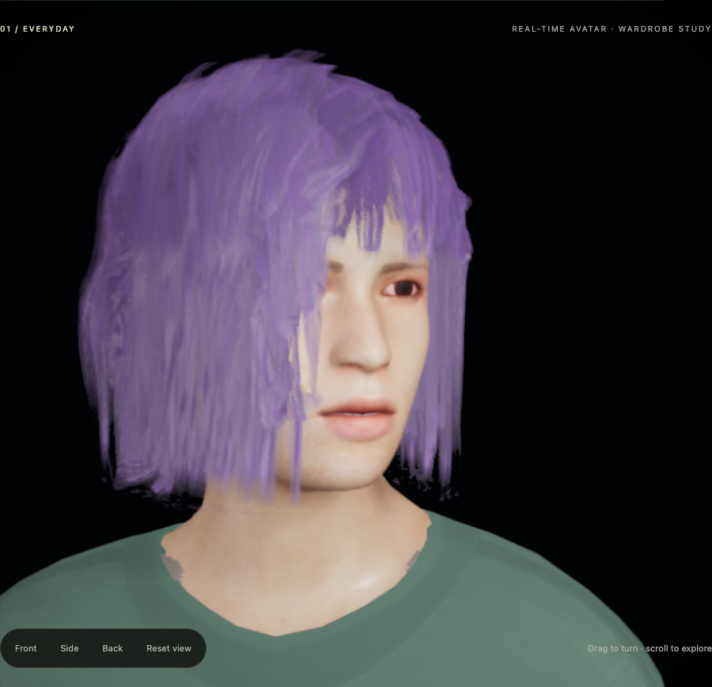
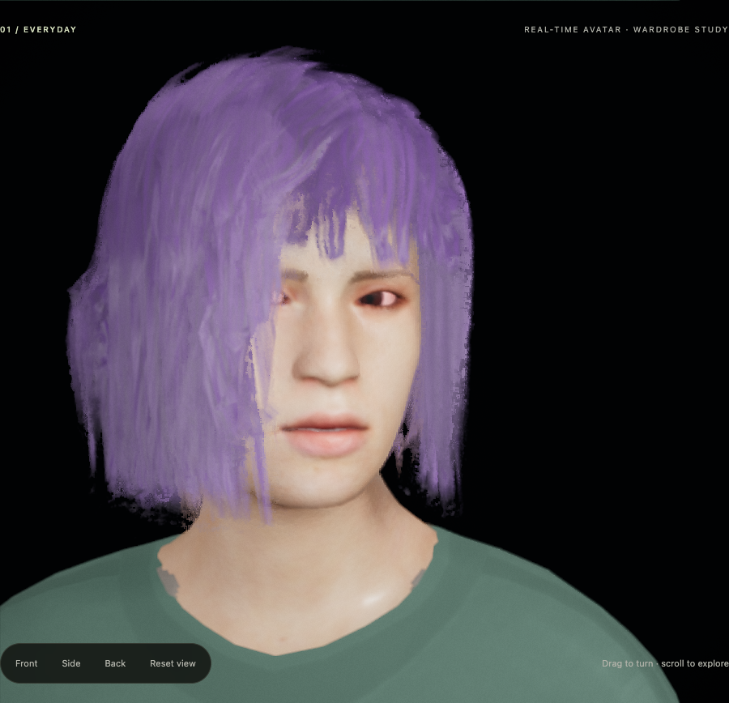
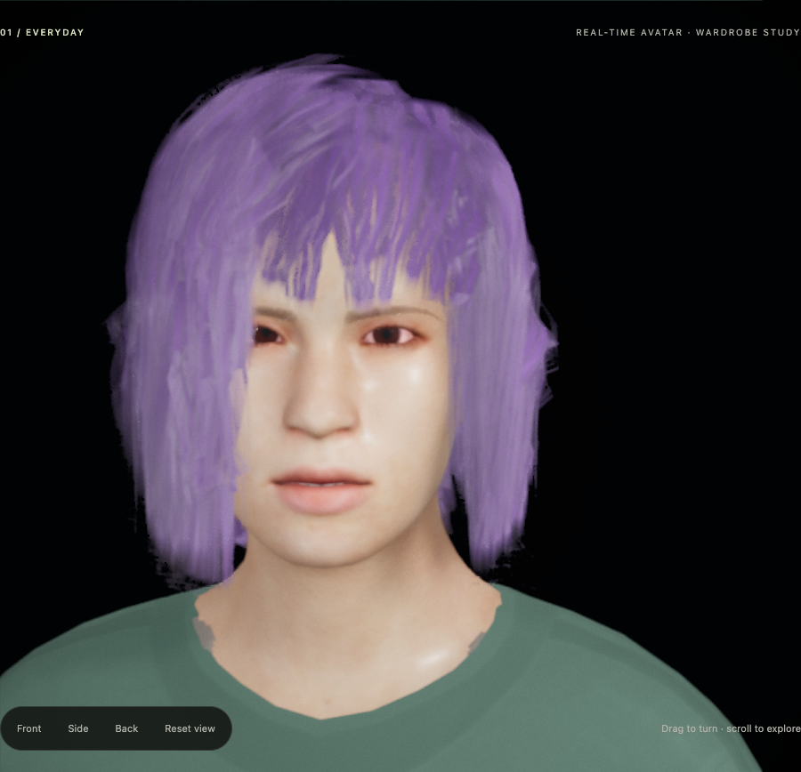
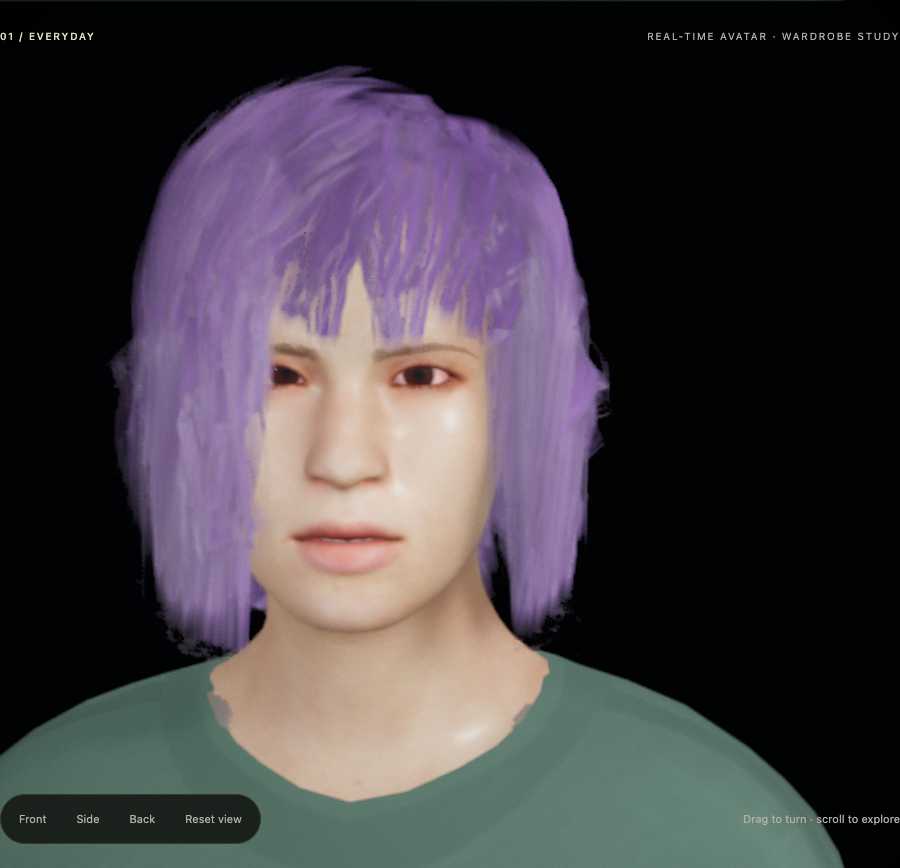
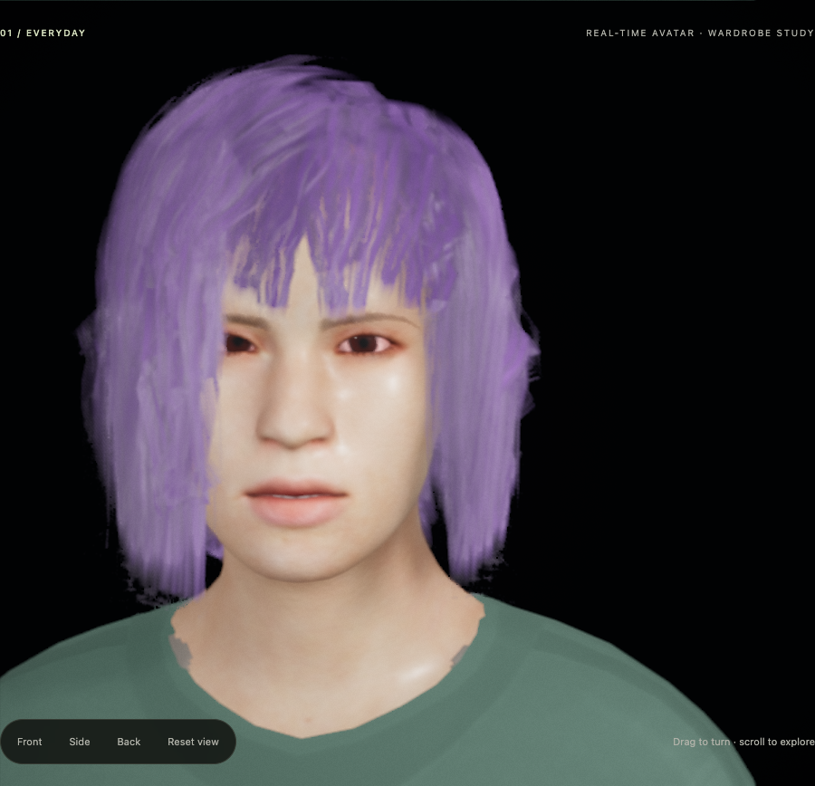
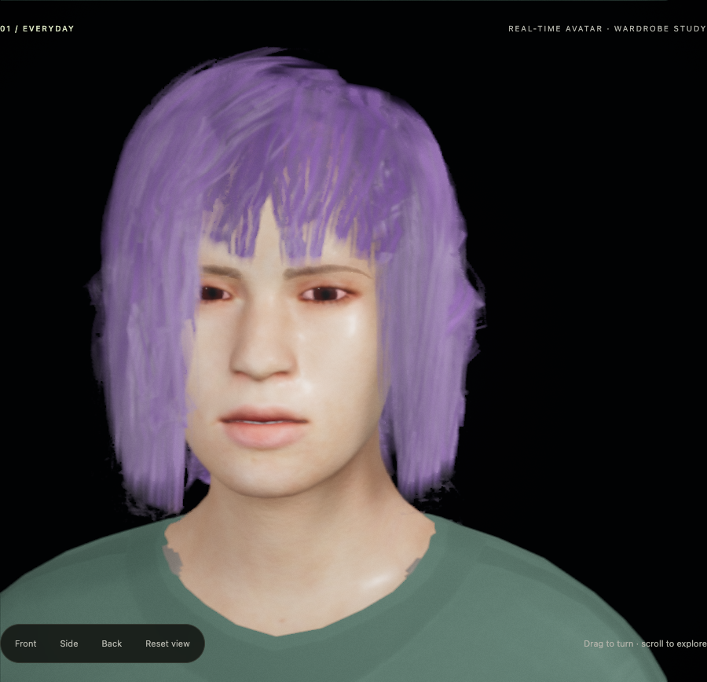
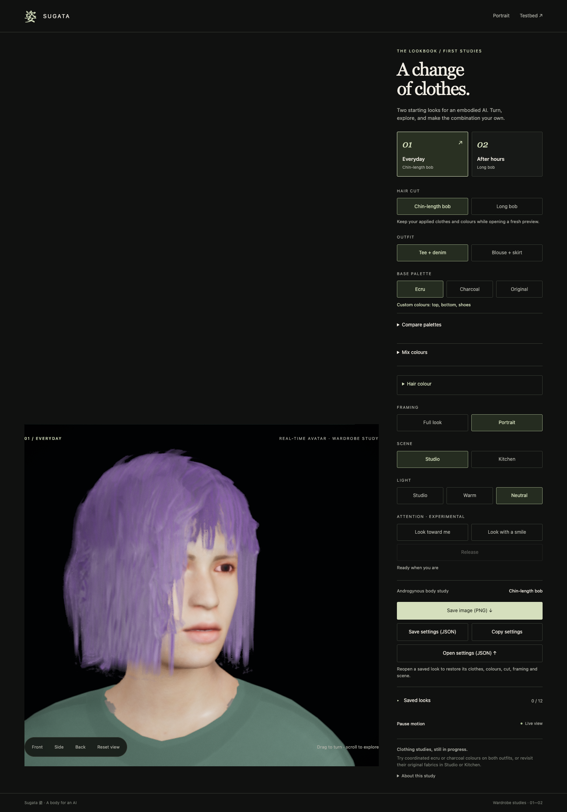
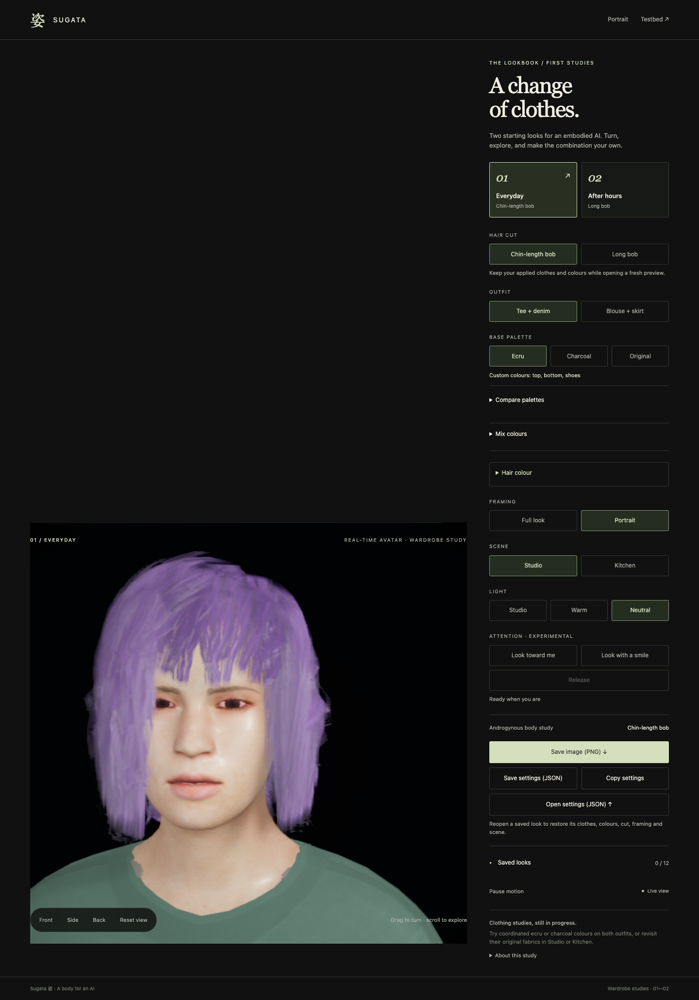

A brief attention view
One current Sage/lavender Portrait composition, restored from the actual JSON. Existing live controls: Resume motion → Look toward me → Release. Sampled images support the viewing guide; continuous naturalness, human intent, hair finish and fit remain unqualified.
Viewing guide · Receipt and limits · Independent critique

baseline.png: baseline; cue clock before encoding 0.0000s, idle. Screenshot completed 88ms later.

entry.png: 0.201s after the relevant button; cue clock before encoding 0.2001s, attending. Screenshot completed 81ms later.

hold-early.png: 0.853s after the relevant button; cue clock before encoding 0.8500s, attending. Screenshot completed 85ms later.

hold-late.png: 1.802s after the relevant button; cue clock before encoding 1.8000s, attending. Screenshot completed 89ms later.

release-entry.png: 0.101s after the relevant button; cue clock before encoding 0.0999s, releasing. Screenshot completed 81ms later.
released.png: 0.452s after the relevant button; cue clock before encoding 0.0000s, idle. Screenshot completed 83ms later.

return.png: 1.503s after the relevant button; cue clock before encoding 0.0000s, idle. Screenshot completed 85ms later.
Native context recording
Ordinary browser video, including loading and UI actions. Retained for review; no continuous-motion verdict was made from it in this packet.
Scrolled page context
Full-page screenshots taken with Attention controls in view; the sticky canvas position reflects that scroll state.

context-before.png; current experimental controls and restored recipe.

context-after.png; current experimental controls and restored recipe.